本記事は Microsoft Azure Tech | Advent Calendar 2022 の 12 日目の記事です。
こんにちは、Japan Developer Support Core チームです🐈
今日は Azure Pipelines で利用する Service connection (Azure service connection) の Service principal を Managed identity に移行する手順をご紹介します。
Managed identity にはいくつかのメリットがありますが、 Azure Pipelines の観点における最大のメリットは有効期限の延長が不要であることではないでしょうか。
Service principal はセキュリティの都合から最大 2 年間の有効期限があるため定期的なキーローテーションが必要となっており、有効期限が切れてしまうとパイプライン実行時に突然認証エラーになったといった現象が発生します。事前に有効期限の延長を保守・運用作業として準備しておけば問題は軽微にすることできますが、セキュリティの都合上から Service principal を開発環境や本番環境といった環境ごとに用意した場合に、例として開発環境では問題なかったが本番環境で突然エラーになってしまい Azure リソースへのデプロイができない大事件に繋がる可能性もあります。
一方で Managed identity はどんな場合でも必ず利用できるわけではなく、一番大きな問題としては Microsoft-hosted エージェントで利用できないことです。
Managed identity は Azure リソースで利用できるものなので Self-hosted エージェントを Azure VM に構築し、Azure VM の設定で Managed identity を有効化する必要があります。 Microsoft-hosted エージェントでは Managed identity を有効化できないため、パイプラインの実行に Microsoft-hosted エージェントを利用しなければならないシナリオでは Managed identity による Service connection は利用できません。
ご参考: Demystifying Service Principals - Managed Identities - Azure DevOps Blog ※英語のブログ記事です。
Managed identity への移行手順
それでは早速手順を見ていきましょう。 Azure DevOps と Azure Portal のそれぞれの作業で分けてあります。
今回は移行ですので、事前準備として Azure VM に Self-hosted エージェントを作成済みの状態で進めていきます。もし Self-hosted エージェントの作成手順がわからない場合は DevOps の Self-hosted エージェントを構築して使ってみよう！ | Japan Developer Support Core Team Blog が参考になりますので、ぜひご覧ください。
Azure DevOps の手順
Service connections を開いて、新しい Service connection を Managed identity タイプで作成する。
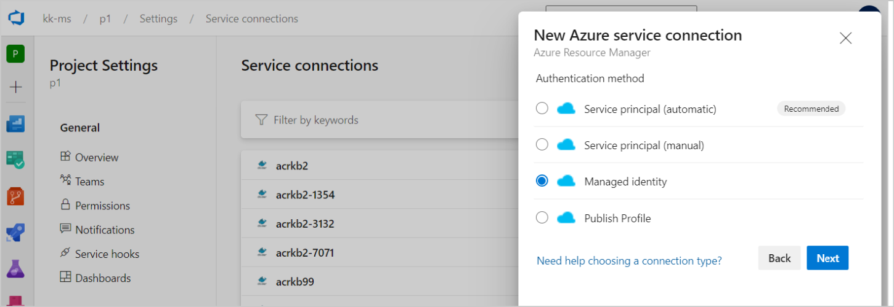
既存の Service connection を開いて Service principal の情報を取得する。
[Manage service connection roles] を選択するとサブスクリプションまたはリソースグループの IAM ページが開くので、このページから Service principal に付与されている権限やロールを確認できます。
[Manage Service Principal] を選択すると Service connection に紐づいている Service principal の情報を確認できます。
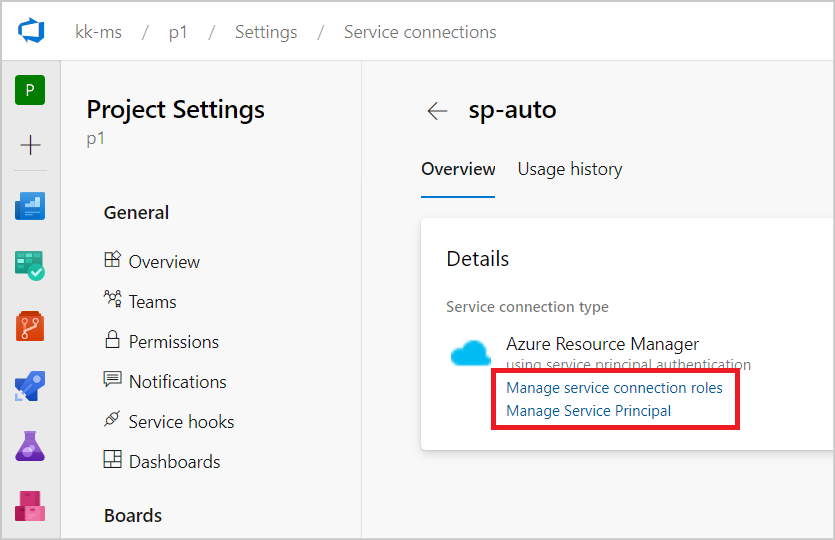既存の Service connection を開いて [Usage history] を確認する。
このページでは Service connection を利用したパイプラインの一覧情報が取得できます。次の作業ではパイプラインの Service connection を更新する必要があるため、ここで変更対象のパイプラインの一覧情報を取得しておきます。
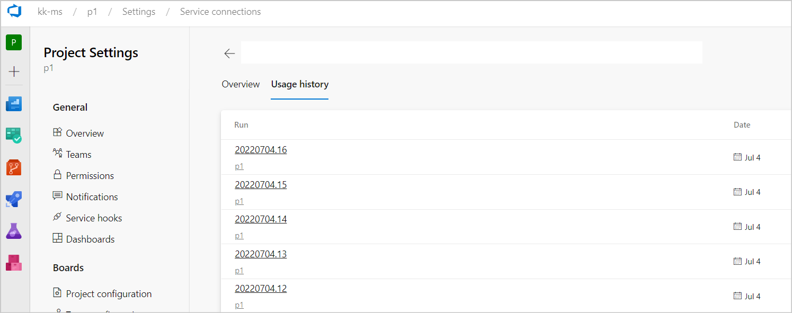パイプラインで利用している既存の Service connection を、新しく作成した Managed identity タイプの Service connection に更新する。
YAML パイプライン定義の場合は定義ファイルの Service connection 名を変更することで更新可能です。
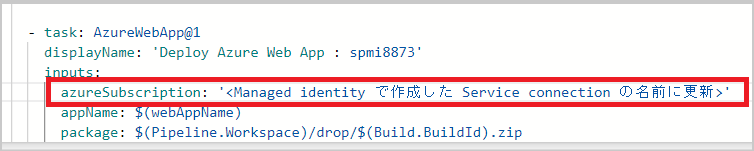クラシック / リリース パイプラインの場合はパラメーターやタスクで利用している Service connection をコンボボックスから変更することで更新可能です。
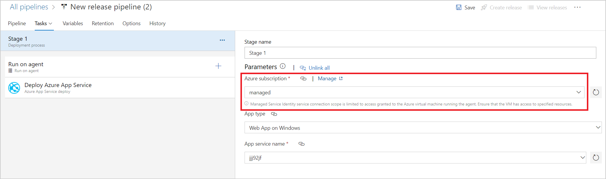
Azure Portal の手順
Self-hosted エージェントが構成済みの Azure VM を開いて、Managed identity を有効化する。
Self-hosted エージェントを構成した VM リソースを開いて ID メニューから Managed identity を有効化できます。今回の例では システム割り当てマネージド ID を利用しています。
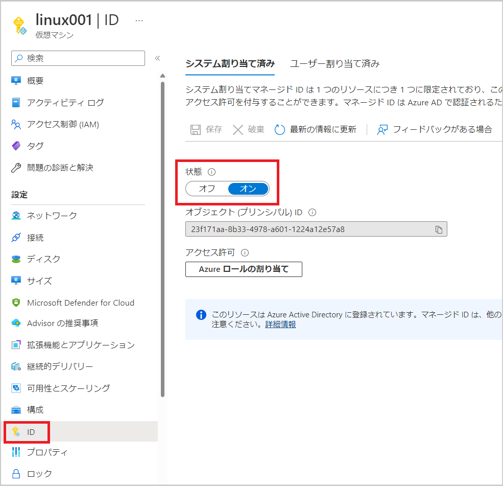既存の Service principal に付与されている権限（ロール）を確認する。
IAM メニューから [アクセスの確認] を開いて Azure DevOps の手順で確認した Service principal を検索することで付与されている権限を確認できます。
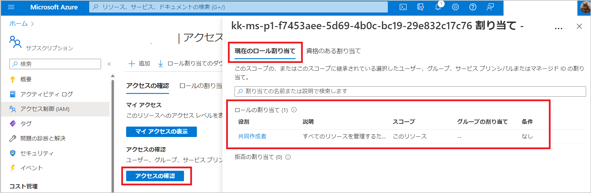Azure VM で利用する Managed identity に必要な権限（ロール）を付与する。
Self-hosted エージェントを構成した VM リソースを開いて ID メニューから [Azure ロールの割り当て] にて権限を付与できます。
※前の手順で確認した権限を付与することでパイプラインは確実に動作しますが “共同作成者” などといった大きな権限を持っている可能性があるので、この機会に適切な権限のみを付与したほうがより安全です。
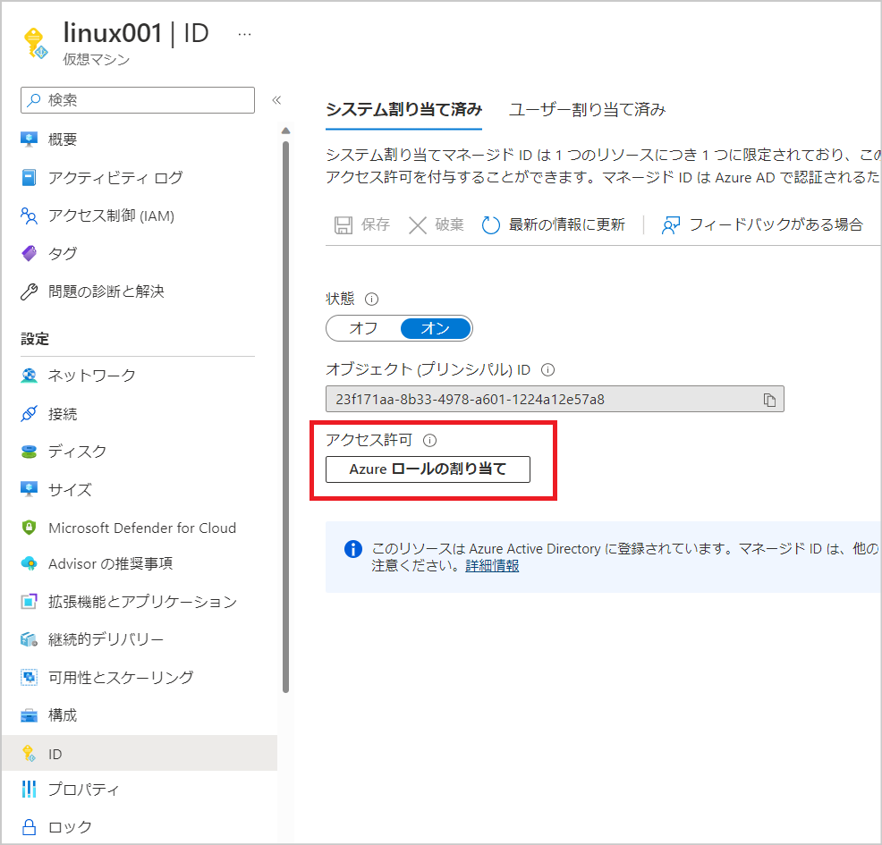
その他 QA
移行にあたってのいくつかの QA にも答えておきます。
Azure DevOps および Azure Portal で必要な権限を教えてください
Azure DevOps にて Service Connection を操作するにあたり、以下の 権限 が必要です。
- Service Connections を作成する場合: Creator 権限
- Service Connections を管理（削除・更新）する場合: Administrator 権限
Creator 権限は Project Contributor が既定でもっており、 Administrator 権限は Project Administrator がもっています。また、自分で作成した Service Connection は自分が Administrator 権限をもつことになるので、例えば Project Contributor であっても、自分が作成した Service Connection は削除・更新ができます。
Azure Portal では Azure VM で Self-hosted エージェントを構築した場合は Managed identity を有効化するために Microsoft.Compute/virtualMachines/write 権限が必要です。この権限は Virtual Machine Contributor などの組み込みロールに含まれています。 リソースのマネージド ID を使用するために必要な Azure RBAC アクセス許可は何ですか? にも詳しい情報が載っています。
また Azure VM で有効化した Managed identity に対して、各 Azure リソースの権限を割り当てる必要があるため、 Azure ロールを割り当てるには、Microsoft.Authorization/roleAssignments/write が必要です。 この権限は組み込みロールの ユーザー アクセス管理者 や 所有者 にも含まれています。
最後に Service principal を手動で削除する場合の権限ですが、自分で作成した Service principal の場合は特に追加の権限は不要です。もし他ユーザーが作成した Service principal を削除する場合は Azure AD 組み込みロールの アプリケーション管理者 または クラウド アプリケーション管理者 が必要です。
不要になった Service principal を削除する方法を教えてください
Service principal (auto) タイプで作成した場合は Service connection を削除したタイミングで Service principal も一緒に削除されます。
基本的には Service connection を作成したユーザーが実行することで Service principal も一緒に削除に削除されますが、 Azure AD の権限がなくなってしまったなどによって Service principal を削除するための権限が不足した場合には Service principal を削除できないため、再度権限を付与いただくか、後述する Service principal (manual) タイプの対応が必要となります。
Service principal を削除できない場合は警告メッセージが表示されます。ここで [Delete] を選択すると Service connection のみ削除されます。 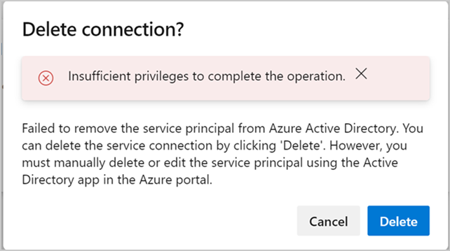
Service principal (manual) タイプで作成した場合は Service connection を削除しても Service principal は一緒に削除されません。
Service principal を削除するためには Azure Portal 画面から利用いただいている Service principal (アプリの登録画面) を開いていただき、 [概要] メニューから [削除] を選択することで Service principal の削除が完了します。
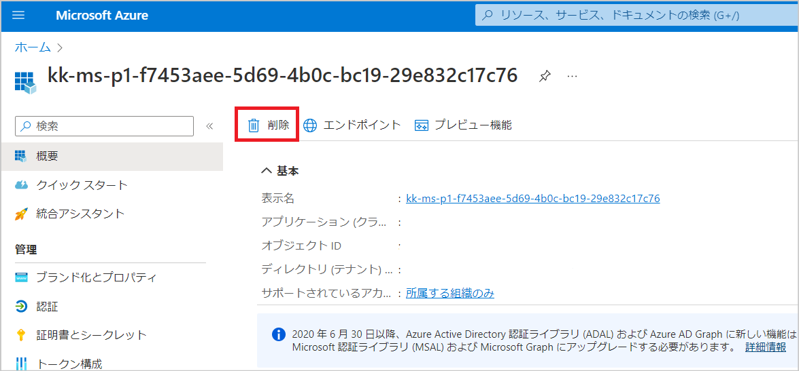
Service connection に紐づいている Service principal の有効期限を確認する方法を教えてください
Azure DevOps の手順にもあるように Service connection を開いて Service principal の情報を取得することで確認が可能です。 [証明書とシークレット] メニューから [クライアント シークレット] を選択することで有効期限が確認できます。
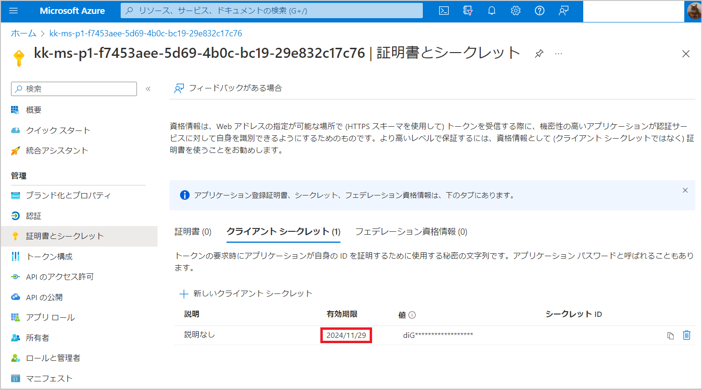
Managed identity はシステム割り当てとユーザー割り当てのどちらが利用できますか
どちらも利用可能です。 マネージド ID の種類 にあるようにそれぞれの特徴があるため、要件にマッチしたものをご利用ください。
一点ほど重要なことがあって、一つの Azure VM に複数のマネージド ID (システム割り当てとユーザー割り当ての組み合わせや、複数のユーザー割り当てなど) を割り当てる場合です。 Service connection を利用するパイプラインの Azure CLI タスクなどでは、タスクの最初に マネージド ID を使用したサインイン を実行します。この時のコマンドは az login --identity となっており、タスクからは --username パラメーターを渡すことができません。そのため、特定のマネージド ID を選択して利用するといったことができないことに注意ください。
まとめ
実際に移行する際はまずは開発環境で利用している Service connection から移行してみて検証するといった方法が安全です。また移行手順では Service connection を新しく作成するので、もし何かしらの問題が発生したらロールバックを行うなど柔軟な対応も可能です。（※既存の Service connection を編集して Service principal タイプから Managed identity タイプに変更できない事情もあります。）
必ずしも Managed identity に移行する必要はありませんので Service principal の有効期限が近くなってきたら、今後の保守・運用をどうしていくか考えて、どちらのタイプが適しているかを考えるきっかけとしてお役立てください。
Service principal (auto) タイプの Service connection を作成いただいている場合は、 サービス プリンシパルのトークンの有効期限が切れた ときには Azure DevOps の Service connection 画面から [Save] いただくことで簡単に期限の延長ができますので、期限をどこかにメモしておき、チーム内で共有しておくだけでも十分の場合もあることでしょう。
今後も Azure DevOps のご利用にお役立ていただける情報をどんどんご紹介していきますので、どうぞよろしくお願いします！
本ブログの内容は弊社の公式見解として保証されるものではなく、開発・運用時の参考情報としてご活用いただくことを目的としています。もし公式な見解が必要な場合は、弊社ドキュメント (https://docs.microsoft.com や https://support.microsoft.com) をご参照いただくか、もしくは私共サポートまでお問い合わせください。